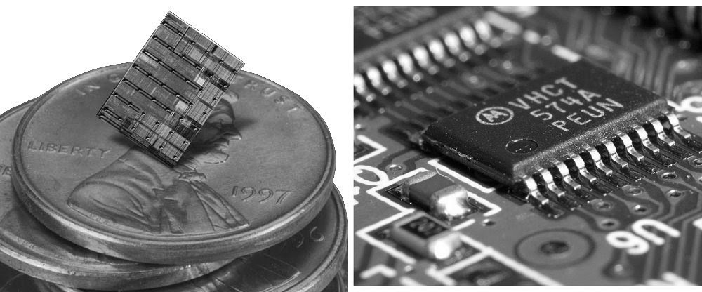

Terceira Geração (1964 - 1977)

A terceira geração de computadores é marcada pela utilização dos circuitos integrados, feitos de silício. Também conhecidos como microchips, eles eram construídos integrando um grande número de transistores, o que possibilitou a construção de equipamentos menores e mais baratos.
Um computador que representa esta geração foi o IBM's System/360, voltado para o setor comercial e científico. Ele possuía uma arquitetura plugável, na qual o cliente poderia substituir as peças que dessem defeitos. Além disso, um conjunto de periféricos eram vendidos conforme a necessidade do cliente.

A IBM, que até então liderava o mercado de computadores, passou a perder espaço quando concorrentes passaram a vender periféricos mais baratos e que eram compatíveis com sua arquitetura. No final desta geração já começaram a surgir os computadores pessoais.

Outro evento importante desta época foi que a IBM passou a separar a criação de hardware do desenvolvimento de sistemas, iniciando o mercado da indústria de softwares. Isto foi possível devido a utilização das linguagens de alto nível nestes computadores.